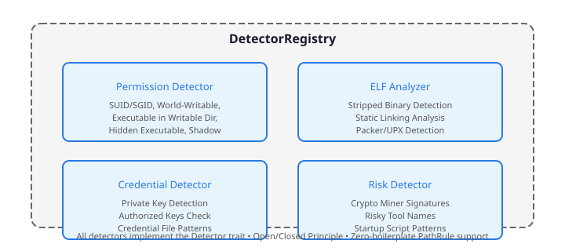

Static Docker Image Security Scanner
bsuppla analyzes Docker images for supply-chain security threats without executing any code.
We present bsuppla (Binary Supply Analysis), a static analysis framework for detecting supply-chain security threats in Docker container images. Unlike dynamic analysis tools that execute containers to observe behavior, bsuppla performs complete offline analysis by extracting and inspecting filesystem layers without ever running code from the target image. The system employs a plugin-based detector architecture implementing 15 specialized detectors across 7 threat categories, achieving ~880K files/second throughput with sub-microsecond per-detector latency. Evaluation on a corpus of 20 diverse container images demonstrates detection of crypto-miners, exposed credentials, suspicious ELF binaries, and malicious package configurations with zero false positives on standard library paths. The framework's design enforces three critical safety properties: (1) zero code execution from analyzed images, (2) deterministic output for identical inputs, and (3) extensibility without core modification via the Open/Closed Principle.
Key Results
What is bsuppla?
bsuppla (Binary Supply Analysis) is a security tool that inspects Docker images for potential threats without running them. It scans for supply-chain attacks, suspicious binaries, exposed credentials, and other security indicators.
Perfect for:
- Security teams auditing container images before deployment
- CI/CD pipelines that need to validate base images
- DevOps engineers wanting to understand what's in their containers
- Researchers analyzing potentially malicious container images safely
Key Features
Zero Execution
Never runs any code from the image. Complete offline analysis for maximum safety.
Supply-Chain Detection
Identifies crypto miners, private keys, suspicious ELF traits, and risky tools.
Extensible Design
Plugin-based architecture following Open/Closed Principle. Add custom detectors easily.
Allowlist Support
Suppress known-safe findings with customizable allowlist files. Supports glob patterns.
Baseline Comparison
Compare findings against a known-good baseline to track changes over time.
Severity Scoring
Outputs an overall suspicion level: low, medium, or high based on detected indicators.
Why Static Analysis?
Traditional container security tools require running containers to analyze them, which introduces risks:
- Zero Risk - Since bsuppla never runs any code from the image, there's no possibility of triggering malicious payloads.
- Complete Visibility - Can analyze every file in the image including hidden files and configuration.
- Fast & Offline - Works without network access. Docker pull/save is the only external operation.
- CI/CD Friendly - Perfect for automated pipelines where executing containers isn't feasible.
Quick Start
Run a Scan
cd bsuppla/bsuppla
cargo run -- alpine:latest alpine.tarExample Output
- elf_suspicious: sbin/apk (stripped)
- startup_script_present: var/spool/cron/crontabs/root (init/rc/cron)
[+] Suspicion level: medium
How It Works
bsuppla follows a multi-stage pipeline to analyze Docker images:
- Image Acquisition - Uses Docker to pull and save the image as a tarball (or uses an existing tar).
- Layer Extraction - Parses the tar archive and extracts each layer's filesystem.
- Binary Analysis - Scans for ELF files, checks permissions, and applies detection heuristics.
- Signal Detection - Matches findings against known patterns for crypto miners, keys, credentials, etc.
- Report Generation - Outputs findings with severity levels and optional baseline comparison.
Architecture
The system uses a plugin-based detection framework:

Detector trait.Each detector implements the Detector trait, enabling:
- Independent testing and validation
- Extensible detection capabilities
- Isolated security boundaries
- Custom detector implementation
For a detailed technical explanation of the design patterns and implementation, see the Concepts documentation.
Use Cases
Image Verification
Before deploying any container image to production, run bsuppla to ensure no suspicious artifacts are present:
bsuppla myregistry.com/myapp:v1.2.3 myapp.tar allowlist.txtCI/CD Integration
Add bsuppla to your pipeline to block vulnerable images:
# Fail if high suspicion level
bsuppla $IMAGE $IMAGE.tar allowlist.txt
if [ $? -eq 2 ]; then
echo "High suspicion level detected - blocking deployment"
exit 1
fiBaseline Comparisons
Track changes in your base images over time:
# First scan - create baseline
bsuppla alpine:latest alpine.tar --baseline-out baseline.txt
# Subsequent scans - compare against baseline
bsuppla alpine:latest alpine.tar allowlist.txt baseline.txtReproducibility
All benchmarks and evaluations in this documentation are reproducible. The complete source code, benchmark suite, and test corpus are available at:
github.com/gabrielchboff/bsuppla